Prostate cANcer graDe Assessment (PANDA)
In this use case, we're going to preprocess the PANDA dataset! This is a huge freely available dataset containing prostate cancer biopsies from two different medical centres. You can read more about the dataset in the publication or the kaggle competition.
Easiest way to download the dataset is through the Kaggle API. Install kaggle API with
# Install/upgrade the Kaggle API.
pip install kaggle --upgrade
# Then download the dataset.
mkdir -p ./PANDA/raw
kaggle competitions download -c prostate-cancer-grade-assessment -p ./PANDA/raw
Finally when the dataset has downloaded (and been unarchived), the directory structure is like this.
./PANDA/
└──raw/
├── sample_submission.csv
├── test.csv
├── train.csv
├── train_images
│ ├── 0005f7aaab2800f6170c399693a96917.tiff
│ ├── 000920ad0b612851f8e01bcc880d9b3d.tiff
│ ├── 0018ae58b01bdadc8e347995b69f99aa.tiff
│ ├── 001c62abd11fa4b57bf7a6c603a11bb9.tiff
│ ├── 001d865e65ef5d2579c190a0e0350d8f.tiff
│ └── ... [omitted 10 611 additional entries]
└── train_label_masks
├── 0005f7aaab2800f6170c399693a96917_mask.tiff
├── 000920ad0b612851f8e01bcc880d9b3d_mask.tiff
├── 0018ae58b01bdadc8e347995b69f99aa_mask.tiff
├── 001c62abd11fa4b57bf7a6c603a11bb9_mask.tiff
├── 001d865e65ef5d2579c190a0e0350d8f_mask.tiff
└── ... [omitted 10511 entries]
Cut slide images into small tiles
First thing to do is to cut the large slide images into smaller images, which can actually be fed to your amazing neural network! Luckily, this is easy with SlideReader.
# Read the slide.
reader = SlideReader(path="./PANDA/raw/train_images/00a7fb880dc12c5de82df39b30533da9.tiff")
# Exctract tile coordinates.
coordinates = reader.get_tile_coordinates(
width=512,
overlap=0.2,
max_background=0.6,
)
# Then let's display a thumbnail image...
display(reader.thumbnail)
# ... the tissue mask...
display(reader.tissue_mask)
# .. and then an annotated thumbnail.
display(reader.annotated_thumbnail_tiles)


From the above images we can see that the slide is read correctly, tissue mask seems correct, and we managed to cover the whole tissue section in tiles, without including tiles with too much background! Pretty good for a few lines of code.
Now can loop over the images in train_images folder and cut each image with the SlideReader function.
# NOTE: This cell is just an example and not actually excecuted.
import os
import pandas
from histoprep.helpers import progress_bar
combined_metadata = []
for f in progress_bar(os.scandir("./PANDA/raw/train_images/"), desc="PANDA"):
# Read slide.
reader = SlideReader(f.path)
# Cut tiles.
slide_metadata = reader.save_tiles(
output_dir="PANDA/tiles",
coordinates=reader.get_tile_coordinates(width=384, overlap=0.2, max_background=0.6),
)
combined_metadata.append(metadata)
# Combine metadata.
combined_metadata = pandas.stack(combined_metadata)
The above cell is a perfectly valid example, but it would be easier to cut all tiles with the HistoPrep excecutable installed alongside the histoprep python module.
!HistoPrep ./PANDA/raw/train_images ./PANDA/tiles 384 --overlap 0.2 --max_background 0.6 --ext tiff
Now that we have cut all slide images into tiles, we should remove any tiles which come from unwanted regions...
Finding outliers
Slide images often contain areas, which we are not interested in. These areas might contain fingerprints, bubbles, ink, pen markings or some other shit. Detecting and identifying tiles from these areas is a crucial task, as neural networks might easily overfit these outliers and then give wrong predictions.
Let's start by combining the metadata from all of the processed slides.
import pandas
from histoprep.helpers import combine_metadata
# Combine all tile_metadata.csv files from PANDA slides.
combined = combine_metadata("./PANDA/tiles/", "tile_metadata.csv")
print("PANDA dataset has {:.1f} million tiles.".format(len(combined) / 1e6))
# Let's also add a column which tells us where the data came from...
train_info = pandas.read_csv("./PANDA/raw/train.csv")
provider = dict(zip(train_info.image_id, train_info.data_provider))
combined["data_provider"] = [provider[x] for x in combined.slide_name]
# ... and an outlier column where we mark outliers!
combined["outlier"] = False
Combining metadata: 10615it [00:55]
PANDA dataset has 2.8 million tiles.
Thats a lot of tiles! Luckily we don't have go through them manually... Let's start by taking a look at the UMAP representation of the preprocessing metrics.
UMAP representation requires that install
umap-learnwithpip install umap-learn.
from histoprep import OutlierDetector
# Initialize outlier detector.
detector = OutlierDetector(combined, num_clusters=10)
# Get an UMAP representation with 200k random tiles.
coords, indices = detector.umap_representation(verbose=False, max_samples=200_000)
# Plot!
detector.plot_representation(coords, indices)

In the representation, each tile is annotated by it's log(distance) from the origo (the "mean" tile), and thus tiles further from the origo are more likely outliers. We can see that the tiles cluster into three bigger groups, which is due to the fact that the PANDA dataset originates from two different medical centres, and is scanned with three scanners.
Histological images vary widely due to differences in scanning equipment and sample preparation. Thus, preprocessing is easier if it's done in a per-dataset basis.
From here on we'll only process the tiles originating from Radboud University medical centre (only one scanner).
radboud = combined[combined.data_provider == "radboud"]
print("There are {:.1f} million tiles from Radboud!".format(len(radboud) / 1e6))
# Let's visualise the representation again.
detector = OutlierDetector(radboud, num_clusters=10)
coords, indices = detector.umap_representation(verbose=False, max_samples=200_000)
detector.plot_representation(coords, indices)
There are 1.3 million tiles from Radboud!
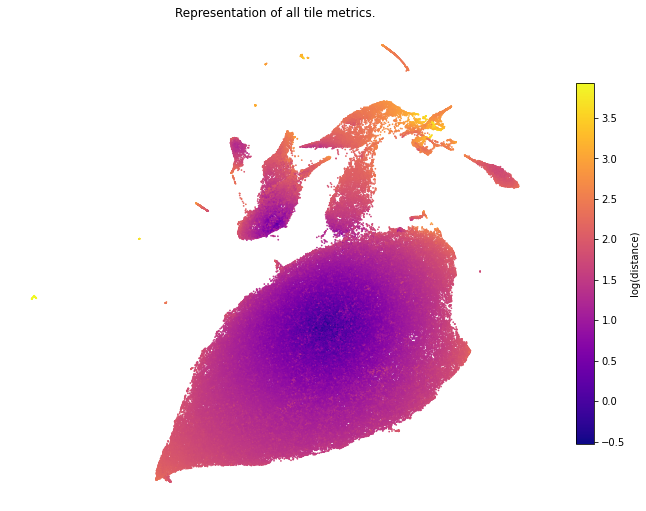
Now the representation looks a lot nicer! We can see that there are clear outlier groups, which should be easy to discard. Before we go into automatic outlier detection, we should mark some easy outliers with the OutlierVisualiser.
from histoprep import OutlierVisualizer
# We'll get a warning here as the dataset contains over a million tiles.
visualizer = OutlierVisualizer(radboud)
/data/jopo/HistoPrep/histoprep/_outliers/_visualize.py:41: UserWarning: Plotting functions may take a while due to size of the data.
warnings.warn(
# Plot the 'background' column with example tiles.
visualizer.plot_histogram_with_examples("background", log_scale=False)
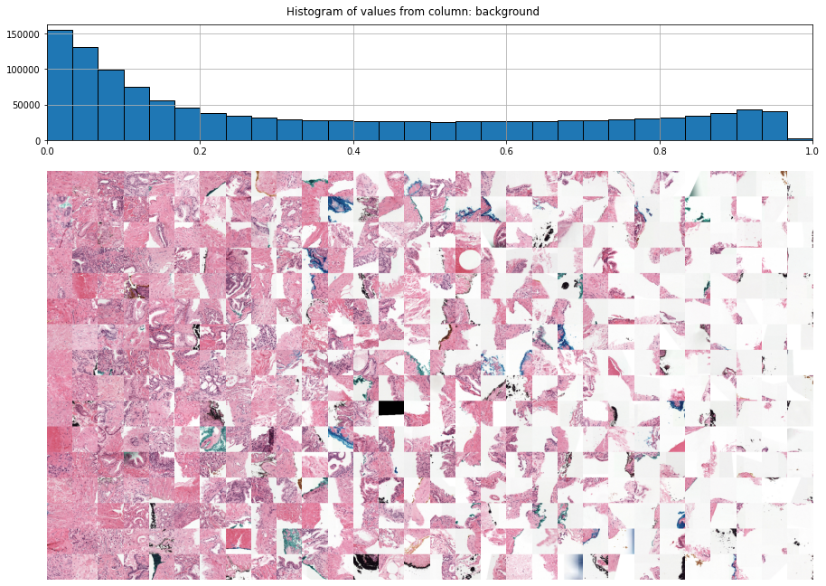
Here we can see that quite many of the tiles contain large amounts of background. This is not good if you're using the RandomResizedCrop function during neural network training to make the network scale invariant. Let's mark tiles with over 60% background as outliers and plot some other preprocessing columns.
radboud.loc[radboud.background > 0.6, "outlier"] = True
visualizer = OutlierVisualizer(radboud[~radboud.outlier])
# Let's plot mean values from the brightness image channels.
visualizer.plot_histogram_with_examples("brightness_mean")
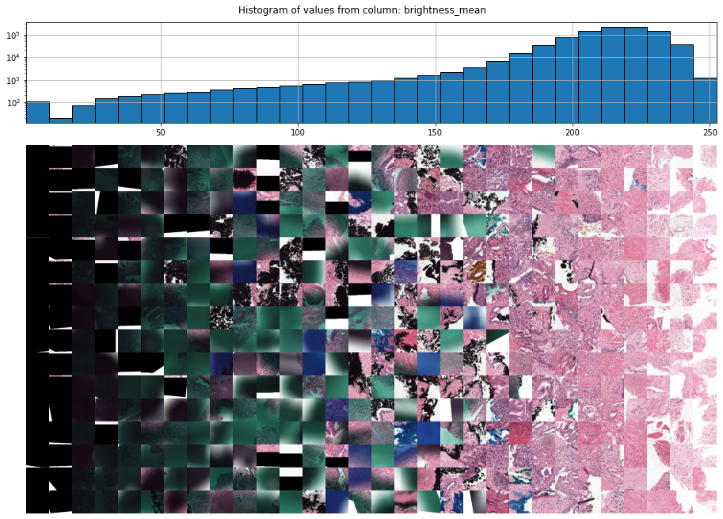
Here we can easily detect some outliers! There are a lot of completely dark tiles, and only some tiles with weird blue shit (probably pen markings). Let's mark the completely black tiles as outliers and try to extract the blue tiles.
radboud.loc[radboud.brightness_mean < 50, "outlier"] = True
visualizer.plot_histogram_with_examples("saturation_mean")
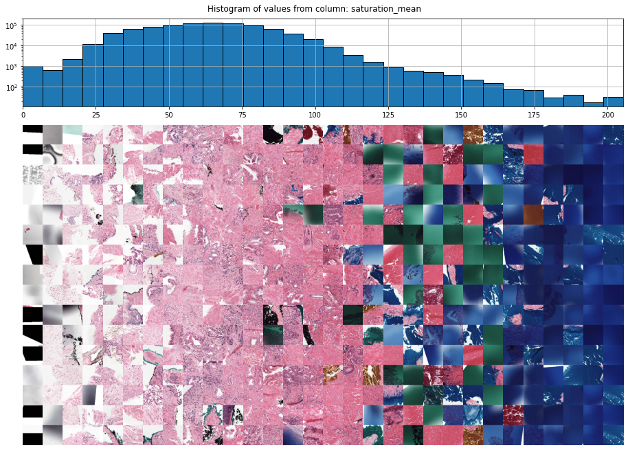
The mean value of the saturation channel seemed to pick up the weird blue tiles. Let's mark these as outliers and move onto automatic outlier detection!
radboud.loc[radboud.saturation_mean > 175, "outlier"] = True
from histoprep import OutlierDetector
# Include only non outliers.
detector = OutlierDetector(radboud[~radboud.outlier])
print(detector)
OutlierDetector(num_clusters=20):
0: dist=36.72 images=1703
1: dist=25.77 images=3000
2: dist=16.73 images=5635
3: dist=16.59 images=4845
4: dist=10.19 images=10231
5: dist=8.54 images=9379
6: dist=7.53 images=18558
7: dist=6.89 images=14857
8: dist=6.81 images=23800
9: dist=6.80 images=41217
10: dist=4.21 images=66061
...
Here we can see that there are several clusters pretty far away from the origo. Let's visualise some random tiles from these clusters!
detector.plot_clusters(min_distance=8)

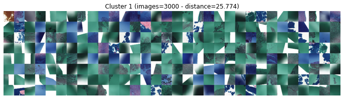
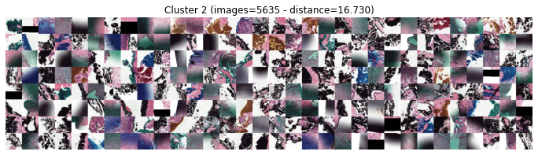
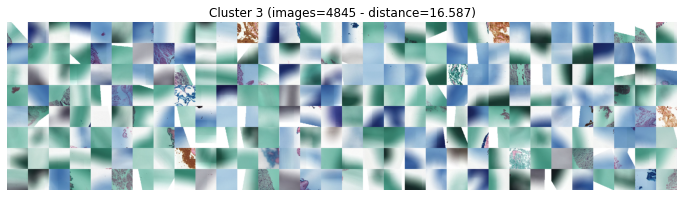
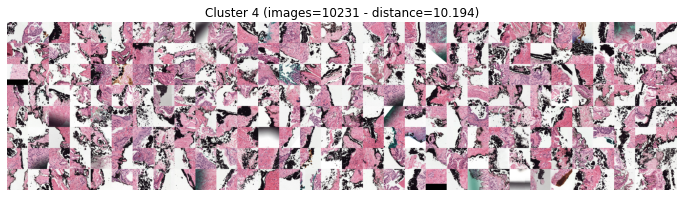
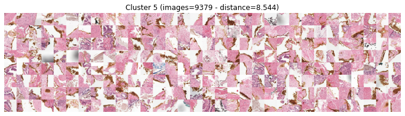
Here we can clearly see that OutlierDetector organises the clusters from most likely to least likely outlier. Clusters 0 to 3 are clear outliers, cluster 4 contains tissue regions with dark areas and cluster 5 contains (mostly) good quality tiles. Let's mark clusters 0 to 3 as outliers.
radboud[~radboud.outlier].loc[detector.clusters <= 3, "outlier"] = True
Now we can repeat the automatic outlier detection with the remaning non-outlier tiles! Each iteration we might catch some outliers that were hiding inside larger groups.
It's also possible to re-cluster a cluster which contains both good and bad tiles. This way you might separate the good tiles from the bad.
python cluster2 = OutlierDetector(radboud[~radboud.outlier][detector.clusters == 2], num_clusters=2)
detector = OutlierDetector(radboud[~radboud.outlier])
detector
OutlierDetector(num_clusters=20):
0: dist=32.15 images=3526
1: dist=17.48 images=5867
2: dist=15.59 images=6904
3: dist=9.39 images=4305
4: dist=9.24 images=16177
5: dist=8.65 images=8493
6: dist=6.67 images=18028
7: dist=6.67 images=25224
8: dist=6.58 images=19228
9: dist=5.92 images=67838
10: dist=4.34 images=40384
...
detector.plot_clusters(min_distance=10)
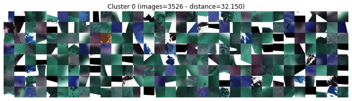
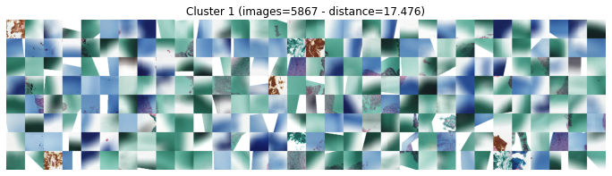
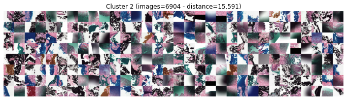
Here we can see that there were still outliers not picked up during the first iteration. Let's marks clusters 0 and 1 as outliers. You could repeat this a few more times.
What to do with the outliers?
Now that you've uncovered outliers in the PANDA dataset, we have several options for dealing with them.
- Remove outliers from the dataset.
- Label outliers as negative samples.
The first option might be the easiest, but could lead to a neural network which might not do so well on a real-world dataset! As the outliers came from real-world dataset, we should include them into the training (and validation) dataset.
Each tile can be labeled, for example, as cancer vs. benign based on the Gleason score masks inside train_label_masks folder. After labeling, every tile identified as an outlier during pre-processing could be marked as benign. This would help the network learn to label these outliers as benign and not panic when encoutering these images during evaluation!